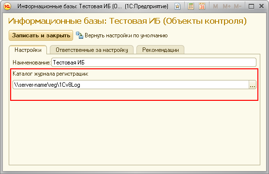

Контроль выполнения регламентных заданий
При выполнении контрольной процедуры возникли проблемы.
Чтобы понять, что привело к критической ситуации вам следует обратиться к содержимому поля "Дополнительные данные по задаче". Возможные варианты содержимого поля "Дополнительные данные по задаче":
- "Ошибка создания/открытия журнала регистрации. Каталог не обнаружен." Неверно указан каталог журнала регистрации или у пользователя.

- "Неверный формат комментария журнала регистрации. Ожидаемый формат: <ИмяМетодаЗадания>;<ОбластьДанных>." Это сообщение означает, что формат записей в журнале регистрации не соответствует ожидаемому. Рекомендуется убедиться, что в исследуемую информационную базу встроена подсистема "Очередь заданий" из инструмента "1С:Библиотека стандартных подсистем 8.2" (БСП), имеющего версию 2.1.2.20 или более позднюю.